1820B21 (Pump) - MASTER CYLINER R.R. for right hand drive versions
- Path
- Procedures > 18 CLUTCH > 1820 CLUTCH RELEASE CONTROLS > 1820B HYDRAULIC CLUTCH SYSTEM > 1820B21 (Pump) - MASTER CYLINER R.R. for right hand drive versions
- Kind
- repair procedure (removal / refitting; the operation number is the code)
- Applies to
- engines: 1.6 TS , 1.8 TS, 2.5 V6, 3.2 V6, 2.4 JTD 10v; all production periods
- Interactive page
- https://sloeber94.github.io/elrnDB-a156/en/#/3237898
Applies to: engines: 1.6 TS , 1.8 TS; all production periods; only with equipment: Right hand drive
 Removing
Removing
 Refitting
RefittingPosition the vehicle on the ramp.
Ensure that the ignition key is in stop position, then disconnect the battery negative (-) terminal.
 | Name | Connector |
|---|---|---|
- | Battery |
1016A40 ignition coil cover on cylinder head- r+r .
1048A34 sleeve(s) from flow meter to air supply capacity case - r + r .
7055B54 under-engine guard - r r .
1076B50 exhaust pipe attachment to engine - r + r .
1072D10 modular inlet manifold - r+r .
Drain the brake-clutch fluid from the reservoir using a suitable syringe.
1. Undo clip (1a) and disconnect the rigid pipe between master cylinder and vibration damper (1b), master cylinder side.
Release the pipe leading from master cylinder to rigid pulse damper inlet pipe from the fastening on the engine compartment bulkhead.
2. Disconnect the rigid ipe from reservoir to clutch pump, hose side.
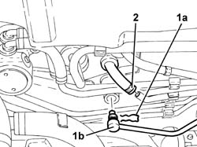
Applies to: engines: 1.6 TS , 1.8 TS; all production periods; only with equipment: Right hand drive
1068A15 accelerator pedal - r r for rhd versions .
1. Remove the split pin (1a) and disconnect the master cylinder rod (1b) from the clutch pedal.
2. Undo nuts (2a) and remove clutch master cylinder (2b).
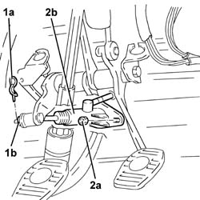
Applies to: engines: 1.6 TS , 1.8 TS; all production periods; only with equipment: Right hand drive
Refitting
RemovingPlace the clutch master cylinder back in its housing and fix it tightening the nuts to the recommended torque.
 | Fastening | Component | Ø | Value (daNm) |
|---|---|---|---|---|
- | Nut | CLUTCH FLUID MASTER CYLINDER | M8 | 1.3 - 2.1 |
Connect the master cylinder rod to the clutch pedal and secure it with its split pin.
1068A15 accelerator pedal - r r for rhd versions .
Connect the rigid pipe from reservoir to clutch pump, hose side.
Secure the rigid pipe from master cylinder to vibration damper and secure to the engine bay bulkhead.
Connect the rigid pipe from the master cylinder to the vibration damper, master cylinder side, and secure with the collar.
1820B08 Clutch release HYDRAULIC SYSTEM - Bleeding air and restoring level .
1072D10 modular inlet manifold - r+r .
1076B50 exhaust pipe attachment to engine - r + r .
7055B54 under-engine guard - r r .
1048A34 sleeve(s) from flow meter to air supply capacity case - r + r .
1016A40 ignition coil cover on cylinder head- r+r .
Connect the negative (-) battery terminal.
Remove the car from the ramps.
Applies to: engines: 2.4 JTD 10v; all production periods; only with equipment: Right hand drive
Removing
Refitting1. Undo the bolts (1a) and remove the sound proof cover (1b).
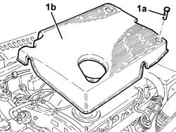
Applies to: engines: 2.4 JTD 10v; all production periods; only with equipment: Right hand drive
Drain the brake-clutch fluid from the reservoir using a suitable syringe.
1. Undo the nuts (1a) and move the plug preheating control unit and E.G.R modulator valve mounting bracket (1b) forwards.
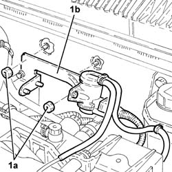
Applies to: engines: 2.4 JTD 10v; all production periods; only with equipment: Right hand drive
1. Disconnect the rigid delivery pipe from the master cylinder on the master cylinder side.
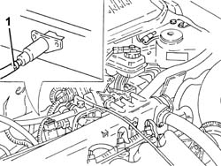
Applies to: engines: 2.4 JTD 10v; all production periods; only with equipment: Right hand drive
1068A15 accelerator pedal - r r for rhd versions .
1. Remove the split pin (1a) and disconnect the master cylinder rod (1b) from the clutch pedal.
2. Disconnect the hose from the reservoir to the master cylinder on the master cylinder side.
3. Undo the nuts (3a) and remove the master cylinder (3b).
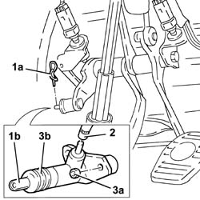
Applies to: engines: 2.4 JTD 10v; all production periods; only with equipment: Right hand drive
Refitting
RemovingFit the master cylinder and secure it with its nuts.
Connect the hose from the reservoir to the master cylinder on the master cylinder side.
Connect the master cylinder to the clutch pedal and secure it with its split pin.
1068A15 accelerator pedal - r r for rhd versions .
Connect the rigid delivery pipe from the master cylinder, master cylinder side and tighten the connector to the specified torque.
| Fastening | Component | Ø | Value (daNm) |
|---|---|---|---|---|
- | Connector | HOSE TO VIBRATION DAMPER | M12 | (Master cylinder side) 1.6 ÷ 2.0 |
Place the mounting bracket for the plug and EGR modulation solenoid preheating system back in its housing and secure it with the bolts.
Place the soundproof cover back in its housing and secure using the relevant bolts.
1820B08 Clutch release HYDRAULIC SYSTEM - Bleeding air and restoring level .
Applies to: engines: 2.5 V6; all production periods; only with equipment: Right hand drive
Removing
RefittingDrain the brake-clutch fluid from the reservoir using a suitable syringe.
1008C10 power unit upper reaction link r r
1. Disconnect the fuel vapour recirculation pipe and remove.
2. Unscrew retaining bolt (2a) and remove electrical connection protective cover (2b).
3. Undo the bolts (3a) and move aside the mounting bracket for the electrical connections.
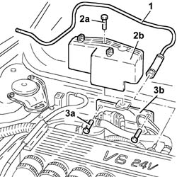
Applies to: engines: 2.5 V6; all production periods; only with equipment: Right hand drive
1. Disconnect the rigid delivery pipe from the master cylinder on the master cylinder side.
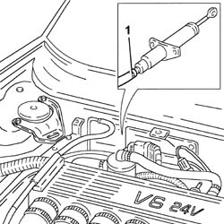
Applies to: engines: 2.5 V6; all production periods; only with equipment: Right hand drive
1068A15 accelerator pedal - r r for rhd versions
1. Remove the split pin (1a) and disconnect the master cylinder rod (1b) from the clutch pedal.
2. Disconnect the hose from the reservoir to the master cylinder on the master cylinder side.
3. Undo the nuts (3a) and remove the master cylinder (3b).
Applies to: engines: 2.5 V6; all production periods; only with equipment: Right hand drive
Refitting
RemovingFit the master cylinder and secure it with its nuts.
Connect the hose from the reservoir to the master cylinder on the master cylinder side.
Connect the master cylinder to the clutch pedal and secure it with its split pin.
1068A15 accelerator pedal - r r for rhd versions
Connect the rigid delivery pipe from the master cylinder on the master cylinder side.
Refit the electrical connections mounting bracket and fix it using the bolts.
Close the protective cover for the electrical connections.
Place the fuel vapour recirculation pipe back in its housing and connect.
1008C10 power unit upper reaction link r r
1820B08 Clutch release HYDRAULIC SYSTEM - Bleeding air and restoring level
Applies to: engines: 3.2 V6; all production periods
Removing
RefittingEnsure that the ignition key is in the OFF position, then disconnect the negative battery terminal (-).
| Name | Connector |
|---|---|---|
- | Battery |
1008C10 power unit upper reaction link r r
1. Open the electrical connections box cover.
2. Disconnect the engine coupling.
3. Disconnect the electrical connections (3a) and (3b) for the rear Lambda sensors and the catalytic converter.
| Name | Connector |
|---|---|---|
3a | Lambda sensor on catalyzer |
| Name | Connector |
|---|---|---|
3b | Lambda sensor on catalyzer -2 |
4. Disconnect the electrical connection for the detonation sensor, timing side.
| Name | Connector |
|---|---|---|
4 | Detonation sensor - 1 |
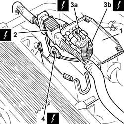
Applies to: engines: 3.2 V6; all production periods
1. Undo the bolts (1a) and remove the connections box (1b).
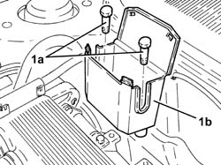
Applies to: engines: 3.2 V6; all production periods
Drain the brake-clutch fluid from the reservoir using a suitable syringe.
1. Disconnect the hoses from the brake fluid reservoir to the master cylinder, master cylinder side, and release from the retaining collars.
2. Release fitting (2a) from the rigid delivery pipe (2b) from the master cylinder.
3. Disconnect the hose from the reservoir to the master cylinder on the master cylinder side.
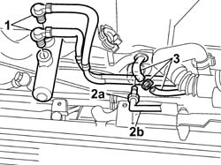
Applies to: engines: 3.2 V6; all production periods
1. Remove the split pin (1a) and disconnect the master cylinder rod (1b) from the clutch pedal.
2. Undo nuts (2a) and remove master cylinder (2b) complete wiht the first section of hose leading to the brake-clutch fluid reservoir.
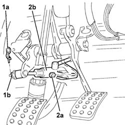
Applies to: engines: 3.2 V6; all production periods
Refitting
RemovingFit the master cylinder and pass the first section hose leading ot hte brake-clutch fluid reservoir into the engine bay.
Secure the master cylinder with nuts.
Connect the master cylinder to the clutch pedal and secure it with its split pin.
Connect the hose from the reservoir to the master cylinder on the master cylinder side.
Connect the connector of the rigid delivery pipe from the master cylinder on the master cylinder side.
Connect the brake hoses leading to the reservoir, to the master cylinder.
Position the connector box and secure with bolts.
Connect the electrical connection for the detonation sensor, timing side.
| Name | Connector |
|---|---|---|
- | Detonation sensor - 1 |
Connect the electrical connections for the rear Lambda sensors to the catalytic converter.
| Name | Connector |
|---|---|---|
- | Lambda sensor on catalyzer |
| Name | Connector |
|---|---|---|
- | Lambda sensor on catalyzer -2 |
Connect the engine junction.
Close the connection box cover.
1008C10 power unit upper reaction link r r
- 0010T64 brake and or clutch fluid check level and top up as necessary
0010T65 hydraulic brake system bleed air
0010T67 hydraulic clutch system bleed air
Connect the negative (-) battery terminal.
Applies to: engines: 2.5 V6; all production periods; only with equipment: Right hand drive
Removing
RefittingDrain the brake-clutch fluid from the reservoir using a suitable syringe.
1008C10 power unit upper reaction link r r
1. Disconnect the fuel vapour recirculation pipe and remove.
2. Unscrew retaining bolt (2a) and remove electrical connection protective cover (2b).
3. Undo bolts (3a) and move aside the electrical connection mounting bracket (3b).
Applies to: engines: 2.5 V6; all production periods; only with equipment: Right hand drive
1. Disconnect the rigid delivery pipe from the master cylinder on the master cylinder side.
Applies to: engines: 2.5 V6; all production periods; only with equipment: Right hand drive
1068A15 accelerator pedal - r r for rhd versions
1. Remove the split pin (1a) and disconnect the master cylinder rod (1b) from the clutch pedal.
2. Disconnect the hose from the reservoir to the master cylinder on the master cylinder side.
3. Undo the nuts (3a) and remove the master cylinder (3b).
Applies to: engines: 2.5 V6; all production periods; only with equipment: Right hand drive
Refitting
RemovingFit the master cylinder and secure it with its nuts.
Connect the hose from the reservoir to the master cylinder on the master cylinder side.
Connect the master cylinder to the clutch pedal and secure it with its split pin.
1068A15 accelerator pedal - r r for rhd versions
Connect the rigid delivery pipe from the master cylinder on the master cylinder side.
Refit, in its seating on the thermostat, the electrical connections mounting bracket and fix it using the bolts.
Close the protective cover for the electrical connections.
Refit the fuel vapour recirculation pipe in its seat and connect.
1008C10 power unit upper reaction link r r
1820B08 Clutch release HYDRAULIC SYSTEM - Bleeding air and restoring level
Topics linked from this page (14)
- 0010T65 hydraulic brake system bleed air
- 0010T67 hydraulic clutch system bleed air
- 1008C10 power unit upper reaction link r r
- 1016A40 ignition coil cover on cylinder head- r+r
- 1048A34 sleeve(s) from flow meter to air supply capacity case - r + r
- 1068A15 accelerator pedal - r r for rhd versions
- 1072D10 modular inlet manifold - r+r
- 1076B50 exhaust pipe attachment to engine - r + r
- 1820B08 Clutch release HYDRAULIC SYSTEM - Bleeding air and restoring level
- 7055B54 under-engine guard - r r
- A1B Battery ( BATTERY NEGATIVE )
- K17 Lambda sensor on catalyzer
- K18 Lambda sensor on catalyzer -2
- K50 Detonation sensor - 1